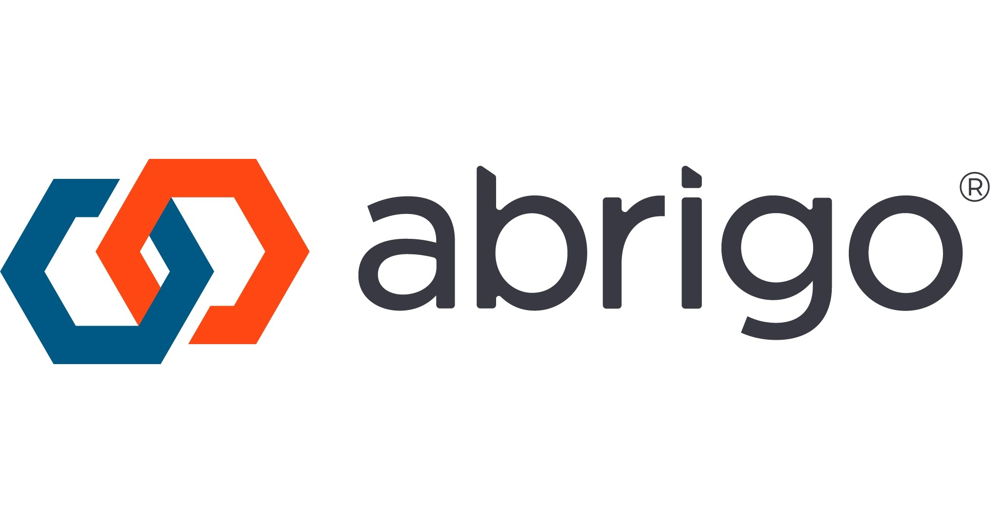

Fintech · Product Management

Abrigo
Senior Product Manager, Fintech SaaS · May 2021 – Present
At Abrigo, a fintech SaaS company serving 2,500+ financial institutions, I lead product strategy and development for a suite of lending automation tools — including Automation Flows, Decision Models, Charm, and Rate Sheets. The work spans the full product lifecycle: running client discovery, shaping roadmap strategy, partnering with engineering and design, and delivering solutions that let banks and credit unions automate loan origination from application to decision.
Powerhouse Performer: Innovation · Apr 2023
Visit abrigo.com